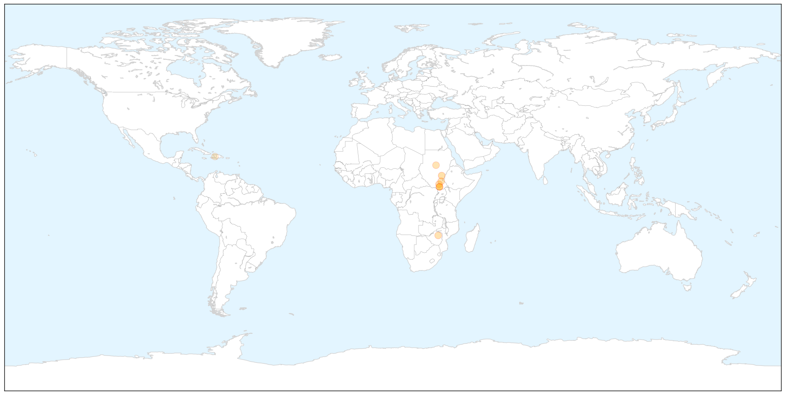
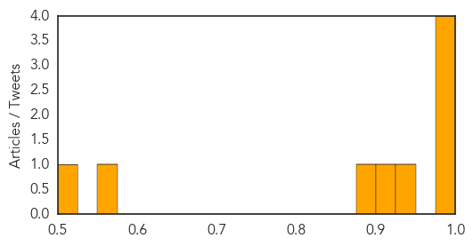
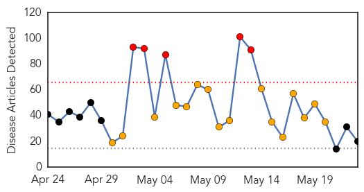
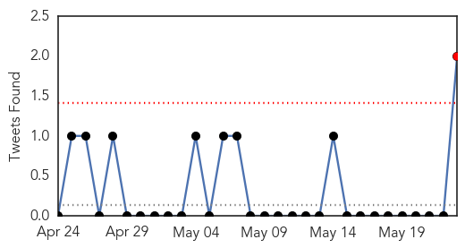
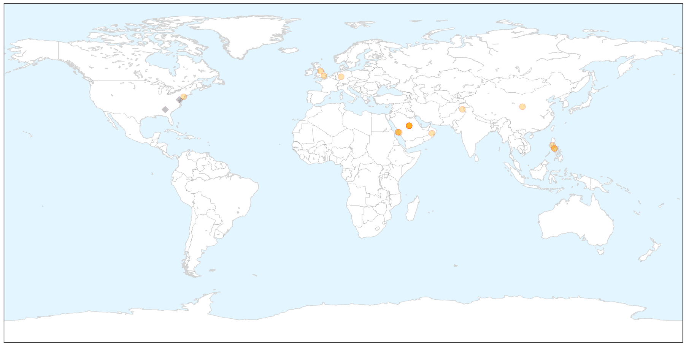
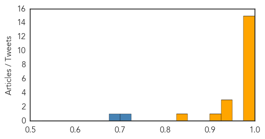

Cholera
30-Day Web Trend
3 alerts, 2 warnings

30-Day Twitter Trend
3 alerts, 0 warnings

Article Locations

X

Article Confidences
Top Articles:
- 0.999
- The most from the coast
- 0.999
- South Sudan: MSF rapidly scales up response to contain cholera outbreak
- 0.998
- UNICEF warns of worsening South Sudan cholera outbreak
- 0.997
- MSF rapidly scales up response to contain cholera outbreak - South Sudan
- 0.928
- UNICEF South Sudan Humanitarian Situation Report #23, Reporting Period 20 – 27 May 2014 - South Sudan
- 0.903
- Diarrhoea Hits Harare Suburbs - Zimbabwe
- 0.880
- Ireland to donate further €2m to South Sudan
- 0.574
- 2013 Mary Rines Thompson Award Winner
- 0.510
- Abyei’s Agok hospital runs out of medicines
Top Tweets:
-
No tweets found for May 23, 2014
MERS
30-Day Web Trend
5 alerts, 16 warnings

30-Day Twitter Trend
1 alerts, 0 warnings

Article Locations

X

Article Confidences
Top Articles:
- 1.000
- N.J. health officials on lookout for rare MERS disease
- 0.999
- MERS-CoV enigma deepens as reported cases surge
- 0.999
- Three Cases Of MERS-CoV Infection Reported In Abu Dhabi
- 0.999
- A Potentially Deadly Virus Comes to the U.S.
- 0.998
- SPECIAL REPORT-Saudi Arabia takes heat for spread of MERS virus
- 0.997
- UN agriculture agency urges more research into role of animals in spreading MERS virus
- 0.997
- Mers coronavirus more aggressive than Sars
- 0.997
- Saudi Arabia, UAE report 6 MERS cases
- 0.996
- Is MERS the next big global health threat?
- 0.996
- MERS virus not seen as threat for US residents
- 0.996
- UN agriculture agency urges more research into role of animals in spreading MERS virus
- 0.996
- Why a MERS Vaccine Won't Be Easy
- 0.994
- Gulf passengers to be screened at Mangalore airport
- 0.987
- 2 Filipinos working in Saudi Arabia die of MERS
- 0.981
- Filipino nurse dies of coronavirus in Jeddah
- 0.940
- Shisha cafe culture may spread MERS faster
- 0.939
- Deadly diseases: Two die of HIV, Congo fever at PIMS
- 0.935
- Shisha cafe culture may spread MERS fasterHealthcare
- 0.907
- Disease outbreak in Johor Baru prison - Nation
- 0.844
- Ministry battles MERS ‘rumors’
Top Tweets:
- 0.710
- FluFactFriday: Both MERS and flu are respiratory illnesses but unlike flu MERS is caused by a coronavirus. http://t.co/Sdq1GkRcaN
- 0.685
- RT: FluFactFriday: Both MERS and flu are respiratory illnesses but unlike flu MERS is caused by a coronavirus. http://t.co/Sd…